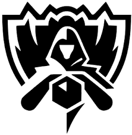

Background

Origins
The first World Championship took place in 2011, with the team Fnatic emerging as the champions. Since then, the tournament has grown significantly in scale and popularity, attracting millions of viewers worldwide. Each year, teams from different regions, including North America, Europe, China, Korea, and others, compete in regional qualifiers to earn a spot in the main event.
Format
The tournament format has evolved over the years, but it typically consists of a group stage followed by knockout rounds. Teams are divided into groups, where they play a round-robin format. The top teams from each group advance to the knockout stage, which includes quarterfinals, semifinals, and the grand final. The winner of the grand final is crowned the World Champion.
Notable Moments
2013 - SK Telecom T1
2018 - Invictus Gaming
2020 - DAMWON Gaming
2022 - DRX
2023-2025 - T1
SK Telecom T1, led by the legendary player Faker, won their first World Championship in 2013. This victory marked the beginning of their dominance in the competitive scene, as they went on to win multiple championships in the following years.
In 2018, Invictus Gaming from China made history by becoming the first Chinese team to win the World Championship. Their victory was a significant milestone for the region and showcased the growing strength of Chinese teams in the global esports scene.
DAMWON Gaming, a South Korean team, won the 2020 World Championship, further solidifying Korea's reputation as a powerhouse in League of Legends esports. Their strategic gameplay and exceptional teamwork were key factors in their success.
In 2022, DRX, another South Korean team, made headlines by winning the World Championship. Their journey to victory was marked by resilience and determination, as they overcame numerous challenges to claim the title.
T1, a South Korean team, continued their legacy by winning the World Championship in 2023, 2024, and 2025. Their consistent performance and strategic prowess have made them one of the most successful teams in the history of League of Legends esports.